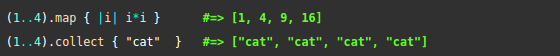
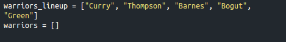
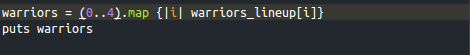
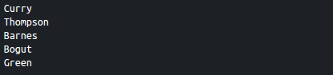

map is an enumerable method that takes an object and a block and runs the block once for each element in the enumerable. It then returns this as an array. If the user does not give a block, the function will return an enumerator. You can see an example of the map method as well as the collect method below:

The map method is actually equivalent to collect and it is more conventional to use map. You can think of map as remapping the object by altering it in some way.
Example
To help demonstrate this, suppose we have two arrays: one called warriors_lineup that contains all of the players in the warriors lineup and one called warriors that is currently empty.

We want to move every player in the warriors_lineup array into the warriors array. So how do we do this? With map:

map loops through the array 5 times because of the (0..4) range, adding each element "i" to the warriors array. When we puts the warriors array, you can see that each element has been added to the array:

For more information see: http://ruby-doc.org/core-2.2.2/Enumerable.html